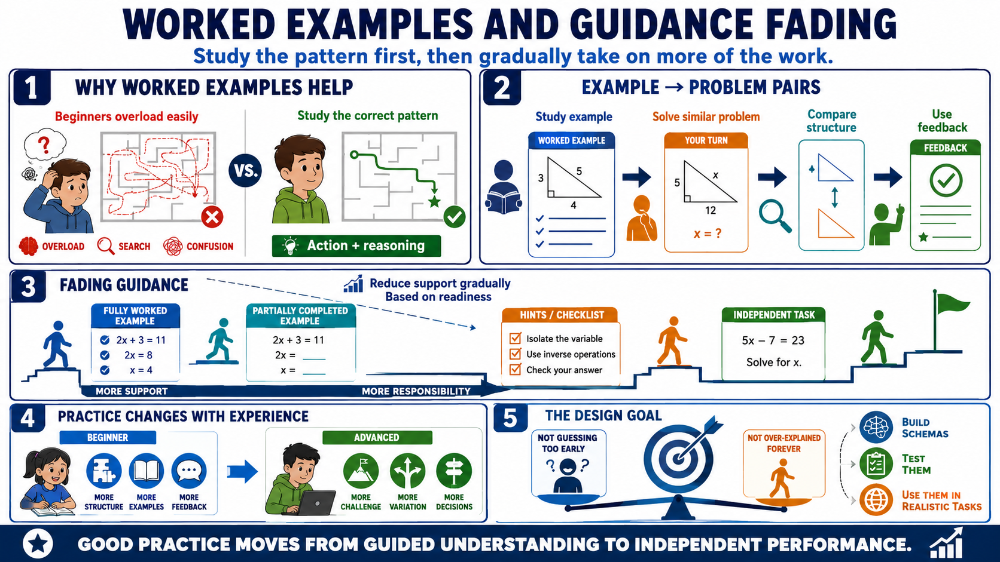

Examples, Practice, and the Worked Example Effect
Connecting to LMS... Progress: in progress

Narration
Worked examples are powerful because they let learners study a correct problem-solving pattern before they are responsible for every step. For beginners, unguided problem solving too early can overload working memory. They may spend so much effort searching for a path that little attention remains for understanding the principle. A good example shows both the action and the reasoning behind the action.
Example-problem pairs are a practical design pattern. Learners study a worked example, then solve a similar problem with enough variation to require attention. This helps them compare the structure of the example with their own attempt. Feedback then connects the attempt back to the pattern. Over time, this builds a bridge from guided understanding to independent performance.
Fading guidance means gradually reducing support as learners gain capability. Early practice may include fully worked examples. Later practice may include partially completed steps, prompts, hints, or checklists. Eventually, learners take on the whole task. The shift should be based on readiness, not on an arbitrary desire to make the course harder. Removing support too early can increase load without improving learning.
Practice should change as learners gain experience. Beginners need structure, examples, and feedback. More advanced learners need challenge, variation, and opportunities to make decisions. The design problem is balancing support and challenge so learners are not left guessing at the beginning and are not trapped in over-explained exercises later. Good practice helps learners build schemas, test them, and use them under increasingly realistic conditions.